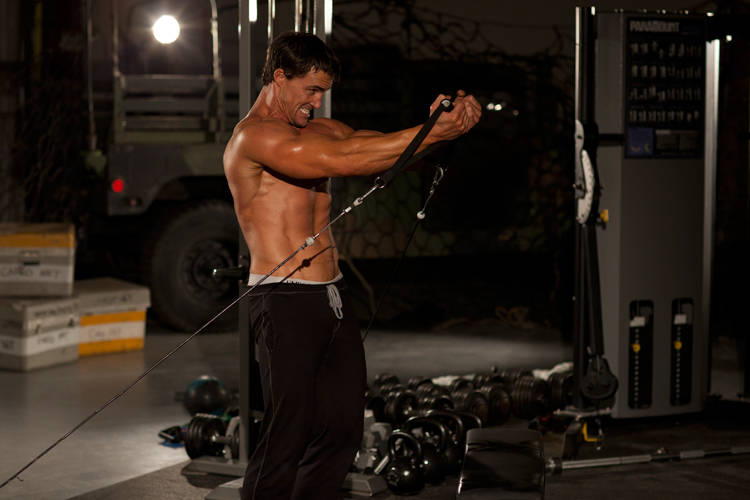

- To move into the starting position, place the pulleys at the low position, select the resistance to be used and grasp a handle in each hand.
- Step forward, gaining tension in the pulleys. Your palms should be facing forward, hands below the waist, and your arms straight. This will be your starting position.
- With a slight bend in your arms, draw your hands upward and toward the midline of your body. Your hands should come together in front of your chest, palms facing up.
- Return your arms back to the starting position after a brief pause.
This exercise appears in Programmd training programs. Take the quiz to find one for your gym.
Find your program